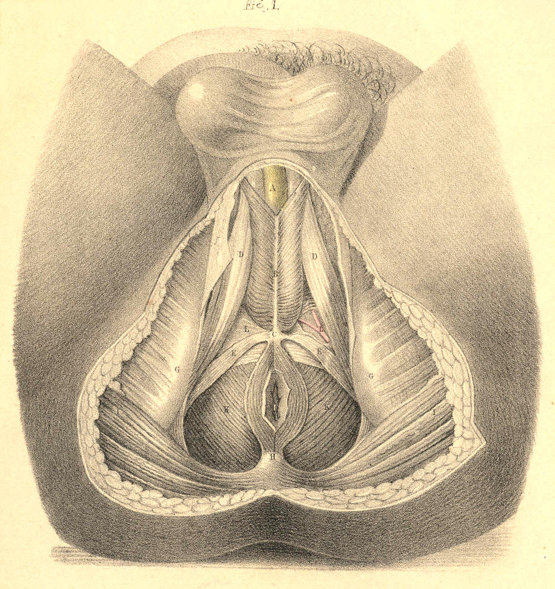
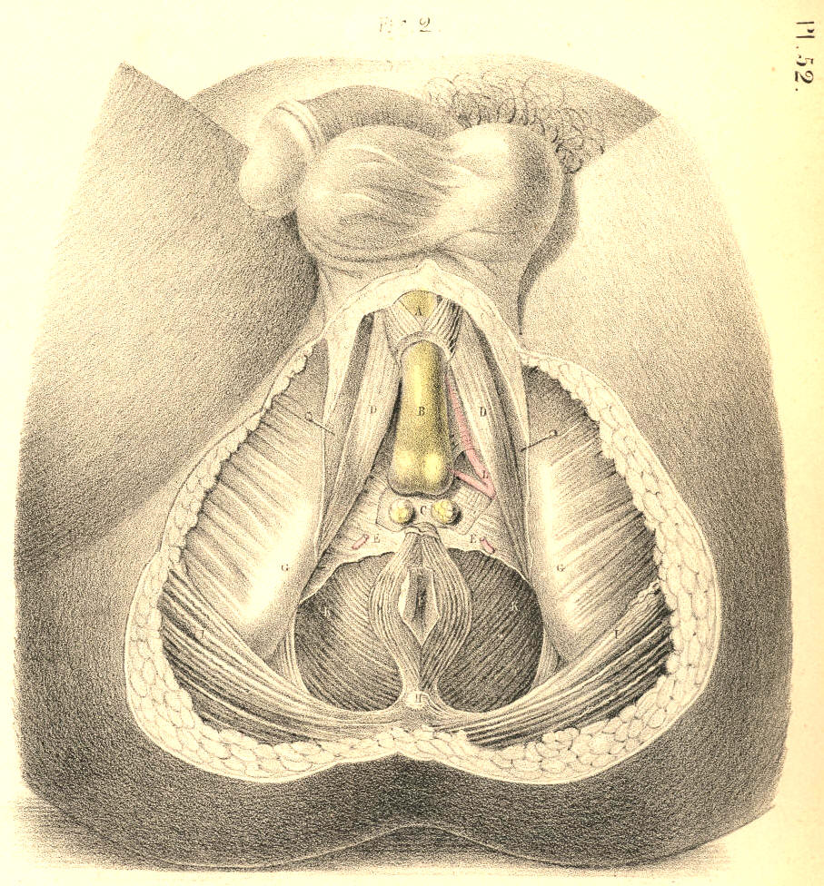
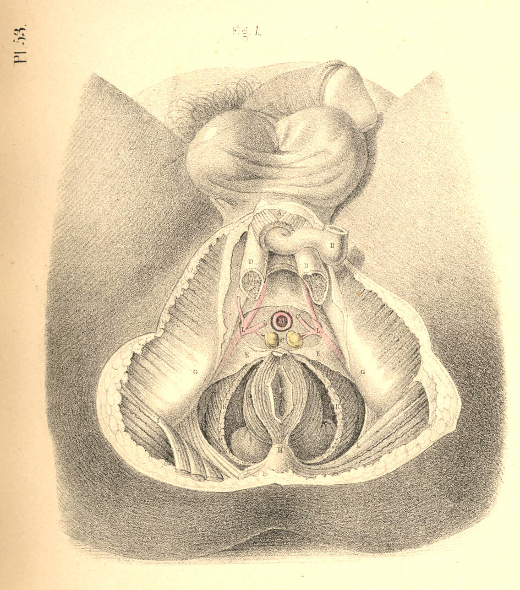
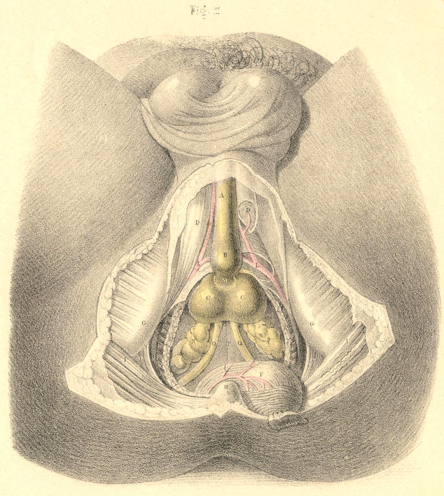

SURGICAL ANATOMY by JOSEPH MACLISE
COMMENTARY ON PLATES 52 & 53.
THE SURGICAL DISSECTION OF THE DEEP STRUCTURES OF THE MALE PERINAEUM.
THE LATERAL OPERATION OF LITHOTOMY.
The urethra, at its membranous part, M, Fig. 1, Plate 53, which
commences behind the bulb, perforates the centre of the deep perinaeal
fascia, E E, at about an inch and a half in front of F, the anus. The
anterior layer of the fascia is continued forwards over the bulb, whilst
the posterior layer is reflected backwards over the prostate gland.
Behind the deep perinaeal fascia, the anterior fibres of K, the levator
ani muscle, arise from either side of the pubic symphysis posteriorly,
and descend obliquely down wards and forwards, to be inserted into the
sides of N N, the rectum above the anus. These fibres of the muscle, and
the lower border of the fascia which covers them, lie immediately in
front of the prostate, C C, Fig. 2, Plate 53, and must necessarily be
divided in the operation of lithotomy. Previously to disturbing the
lower end of the rectum from its natural position in the perinaeum, its
close relation to the prostate and base of the bladder should be
noticed. While the anus remains connected with the deep perinaeal fascia
in front, the fibres of the levator ani muscle of the left side may be
divided; and by now inserting the finger between them and the rectum,
the left lobe of the prostate can be felt in apposition with the
forepart of the bowel, an inch or two above the anus. It is owing to
this connexion between these parts that the lithotomist has to depress
the bowel, lest it be wounded, while the prostate is being incised. If
either the bowel or the bladder, or both together, be over-distended,
they are brought into closer apposition, and the rectum is consequently
more exposed to danger during the latter stages of the operation. The
prostate being in contact with the rectum, the surgeon is enabled to
examine by the touch, per anum,
the state of the gland. If the prostate
be diseased and irregularly enlarged, the urethra, which passes through
it, becomes, in general, so distorted, that the surgeon, after passing
the catheter along the urethra as far as the prostate, will find it
necessary to guide the point of the instrument into the bladder, by the
finger introduced into the bowel. The middle or third lobe of the
prostate being enlarged, bends the prostatic part of the urethra
upwards. But when either of the lateral lobes is enlarged, the urethra
becomes bent towards the opposite side.
By dividing the levator ani muscle on both sides of the rectum, F, Fig.
2, Plate 53, and detaching and depressing this from the perinaeal
centre, the prostate, C C, and base of the bladder, P, are brought into
view. The pelvic fascia may be now felt reflected from the inner surface
of the levator ani muscle to the bladder at a level corresponding with
the base of the prostate, and the neck of the bladder in front, and the
vesiculae seminales, N N, laterally. In this manner the pelvic fascia
serves to insulate the perinaeal space from the pelvic cavity. The
prostate occupies the centre of the perinaeum. If the perinaeum were to
be penetrated at a point midway between the bulb of the urethra and the
anus, and to the depth of two inches straight backwards, the instrument
would transfix the apex of the gland. Its left lobe lies directly under
the middle of the line of incision which the lithotomist makes through
the surface; a fibrous membrane forms a capsule for the gland, and
renders its surface tough and unyielding, but its proper substance is
friable, and may be lacerated or dilated with ease, after having partly
incised its fibrous envelope. The membranous part of the urethra, M,
Fig. 2, Plate 53, enters the apex of the prostate, and traverses this
part in a line, nearer to the upper than to the under surface; and that
portion of the canal which the gland surrounds, is named prostatic. The
prostate is separated from the pudic artery by the levator ani muscle,
and from the artery of the bulb, by the deep perinaeal fascia and the
muscular fibres enclosed between its two layers.
The prostate being a median structure, is formed of two lobes, united at
the median line. The bulbus urethrae being also a median structure, is
occasionally found notched in the centre, and presenting a bifid
appearance. On the base of the bladder, P, Fig. 2, Plate 53, the two
vasa deferentia, Q Q, are seen to converge from behind forwards, and
enter the base of the gland; a triangular interval is thus formed
between the vasa, narrower before than behind, and at the middle of this
place the point of the trocar is to be passed (through the rectum,) for
the purpose of evacuating the contents of the bladder, when other
measures fail. When this operation is required to be performed, the
situation of the prostate is first to be ascertained through the bowel;
and at a distance of an inch behind the posterior border of the gland,
precisely in the median line, the distended base of the bladder may be
safely punctured. If the trocar pierce the bladder at this point, the
seminal vessels converging to the prostate from either side, and the
recto-vesical serous pouch behind, will escape being wounded. If the
prostate happen to be much enlarged, the relative position of the
neighbouring parts will be found disturbed, and in such case the bladder
can be punctured above the pubes with greater ease and safety. In cases
of impassable stricture, when
extravasation of urine is threatened, or
has already occurred, the urethra should be opened in the perinaeum
behind the place where the stricture is situated, and this (in the
present instance) certainly seems to be the more effectual measure, for
at the same time that the stricture is divided, the contents of the
bladder may be evacuated through the perinaeum. If the membranous part
of the urethra be that where the stricture exists, a staff with a
central groove is to be passed as far as the strictured part, and having
ascertained the position of the instrument by the finger in the bowel,
the perinaeum should be incised, at the middle line, between the bulb of
the urethra and the anus. The urethra in this situation will be found to
curve backwards at the depth of an inch or more from the surface. The
point of the staff is now to be felt for, and the urethra is to be
incised upon it. The bistoury is next to be carried backwards through
the stricture till it enters that part of the urethra (usually dilated
in such cases) which intervenes between the seat of obstruction and the
neck of the bladder.
The lateral operation of lithotomy is to be performed according to the
above described anatomical relations of the parts concerned. The bowel
being empty and the bladder moderately full, a staff with a groove in
its left side is to be passed by the urethra into the bladder. The
position and size of the prostate is next to be ascertained by the left
fore-finger in the rectum. Having now explored the surface of the
perinaeum in order to determine the situation of the left tuberosity and
ischio-pubic ramus, in relation to the perinaeal middle line, the staff
being held steadily against the symphysis pubis, the operator proceeds
to divide the skin and superficial fascia on the left side of the
perinaeum, commencing the incision on the left of the raphe about an
inch in front of the anus, and carrying it downwards and outwards midway
between the anus and ischiatic tuberosity, to a point below these parts.
The left fore-finger is then to be passed along the incision for the
purpose of parting the loose cellular tissue; and any of the more
resisting structures, such as the transverse and levator ani muscles,
are to be divided by the knife. Deep in the forepart of the wound, the
position of the staff is now to be felt for, and the structures which
cover the membranous portion of the urethra are to be cautiously
divided. Recollecting now that the artery of the bulb passes anterior to
the staff in the urethra on a level with the bulb, the vessel is to be
avoided by inserting the point of the knife in the groove of the staff
as far backwards--that is, as near the apex of the prostate--as
possible. The point of the knife having been inserted in the groove of
the staff, the bowel is then to be depressed by the left fore-finger;
and now the knife, with its back to the staff, and its edge lateralized
(towards the lower part of the left tuber ischii), is to be pushed
steadily along the groove in the direction of the staff, and made to
divide the membranous part of the urethra and the anterior two-thirds of
the left lobe of the prostate. The gland must necessarily be divided to
this extent if the part of the urethra which it surrounds be traversed
by the knife. The extent to which the prostate is divided depends upon
the degree of the angle which the knife, passing along the urethra,
makes with the staff. The greater this angle is, the greater the extent
to which the gland will be incised. The knife being next withdrawn, the
left fore-finger is to be passed through the opening into the bladder,
and the parts are to be dilated by the finger as it proceeds, guided by
the staff. The staff is now to be removed while the point of the finger
is in the neck of the bladder, and the forceps is to be passed into the
bladder along the finger as a guide. The calculus, now in the grip of
the forceps, is to be extracted by a slow undulating motion.
The general rules to be remembered and adopted in performing the
operation of lithotomy are as follow:--1st, The incision through the
skin and sub-cutaneous cellular membrane should be freely made, in order
that the stone may be easily extracted and the urine have ready egress.
The incision which (judging from the anatomical relations of the parts)
appears to be best calculated to effect these objects, is one which
would extend from a point an inch above the anus to a point in the
posterior perinaeal space an inch or more below the anus. The wound thus
made would depend in relation to the
neck of the bladder; the important
parts, vessels, &c., in the anterior perinaeal space would be
avoided
where the incision, if extended upwards, would have no effect whatever
in facilitating the extraction of the stone or the egress of the urine;
and what is also of prime importance, the external opening would
directly correspond with the incision through the prostate and neck of
the bladder. 2nd, After the incision through the skin and superficial
fascia is made, the operator should separate as many of the deeper
structures as will admit of it, by the finger rather than by the knife;
and especially use the knife cautiously towards the extremities of the
wound, so as to avoid the artery of the bulb, and the bulb itself in the
upper part, and the rectum below. The pudic artery will not be
endangered if the deeper parts be divided by the knife, with its edge
directed downwards and outwards, while its point slides securely along
the staff in the prostate. 3rd, The prostate should be incised
sparingly, for, in addition to the known fact that the gland when only
partly cut admits of dilatation to a degree sufficient to admit the
passage of even a stone of large size, it is also stated upon high
authority that by incising the prostate and neck of the bladder to a
length equal to the diameter of the stone, such a proceeding is more
frequently followed with disastrous results, owing to the circumstance
that the pelvic fascia being divided at the place where it is reflected
upon the base of the gland and the side and neck of the bladder, allows
the urine to infiltrate the cellular tissue of the pelvis. [Footnote]
[Footnote: "The object in following this method," Mr. Liston observes,
"is to avoid all interference with the reflexion of the ilio-vesical
fascia from the sides of the pelvic cavity over the base of the gland
and side of the bladder. If this natural boundary betwixt the external
and internal cellular tissue is broken up, there is scarcely a
possibility of preventing infiltration of the urine, which must almost
certainly prove fatal. The prostate and other parts around the neck of
the bladder are very elastic and yielding, so that without much solution
of their continuity, and without the least laceration, the opening can
be so dilated as to admit the fore-finger readily through the same
wound; the forceps can be introduced upon this as a guide, and they can
also be removed along with a stone of considerable dimensions, say from
three to nearly five inches in circumference, in one direction, and from
four to six in the largest."--Practical
Surgery, page 510. This doctrine
(founded, no doubt, on Mr. Liston's own great experience) coincides with
that first expressed by Scarpa, Le Cat, and others. Sir Benjamin Brodie,
Mr. Stanley, and Mr. Syme are also advocates for limited incisions,
extending no farther than a partial division of the prostate, the rest
being effected by dilatation. The experience, however, of Cheselden,
Martineau, and Mr. S. Cooper, inclined them in favour of a rather free
incision of the prostate and neck of the bladder proportioned to the
size of the calculus, so that this may be extracted freely, without
lacerating or contusing the parts, "and," says the distinguished
lithotomist Klein, "upon this basis rests the success of my operations;
and hence I invariably make it a rule to let the incision be rather too
large than too small, and never to dilate it with any blunt instrument
when it happens to be too diminutive, but to enlarge it with a knife,
introduced, if necessary, several times."--Practische Ansichten der
Bedeutendsten Chirurgische Operationen.
Opinions of the highest
authority being thus opposed, in reference to the question whether free
or limited incisions in the neck of the bladder are followed
respectively by the greater number of fatal or favourable results, and
these being thought mainly to depend upon whether the pelvic fascia be
opened or not, one need not hesitate to conclude, that since facts seem
to be noticed in support of both modes of practice equally, the issue of
the cases themselves must really be dependent upon other circumstances,
such as the state of the constitution, the state of the bladder, and the
relative position of the internal and external incisions. "Some
individuals (observes Sir B. Brodie) are good subjects for the
operation, and recover perhaps without a bad symptom, although the
operation may have been very indifferently performed. Others may be
truly said to be bad subjects, and die, even though the operation be
performed in the most perfect manner. What is it that constitutes the
essential difference between these two classes of cases? It is,
according to my experience, the presence or absence of organic
disease."--Diseases of the Urinary
Organs.]
The position in which the staff is held while the membranous urethra and
prostate are being divided should be regulated by the operator himself.
If he requires the perinaeum to be protruded and the urethra directed
towards the place of the incision, he can effect this by depressing the
handle of the instrument a little towards the right groin, taking care
at the same time that the point is kept beyond the prostate in the
interior of the bladder.
DESCRIPTION OF THE FIGURES OF PLATES 52 & 53.
PLATE 52.
FIGURE 1.
A. The urethra.
B. Accelerator urinae muscle.
C. Central perinaeal tendon.
D D. Right and left erector penis muscle.
E E. The transverse muscles.
F. The anus.
G G. The ischiatic tuberosities.
H. The coccyx.
I I. The glutei muscles.
K K. The levator ani muscle.
L. The left artery of the bulb.

Plate 52.--Figure 1
FIGURE 2.
A, D, F, G, H, I, K, L refer to the same parts as in Fig. 1, Plate 52.
B. The urethra.
C. Cowper's glands between the two layers of--
E. The deep perinaeal fascia.
M. The bulb of the urethra.

Plate 52.--Figure 2
PLATE 53.
FIGURE 1.
A, B, C, E, F, G, H, I, K, L refer to the same parts as in Fig. 2, Plate
52.
D D. The two crura penis.
M. The urethra in section
N N. The rectum.
O. The sacro-sciatic ligament.

Plate 53.--Figure 1
FIGURE 2.
A, B, D, G, H, I, K, L, O refer to the same parts as in Fig. 1, Plate
53.
C C. The two lobes of the prostate.
F. The rectum turned down.
M. The membranous part of the urethra.
N N. The vesiculae seminales.
P. The base of the bladder.
Q Q. The two vasa deferentia.

Plate 53.--Figure 2.
COMMENTARY ON PLATES 54,
55, & 56